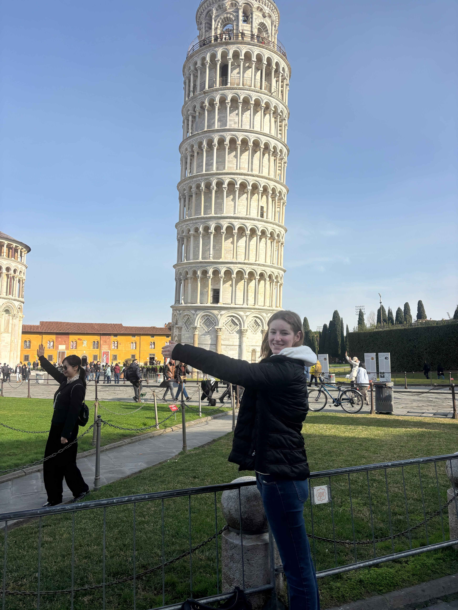
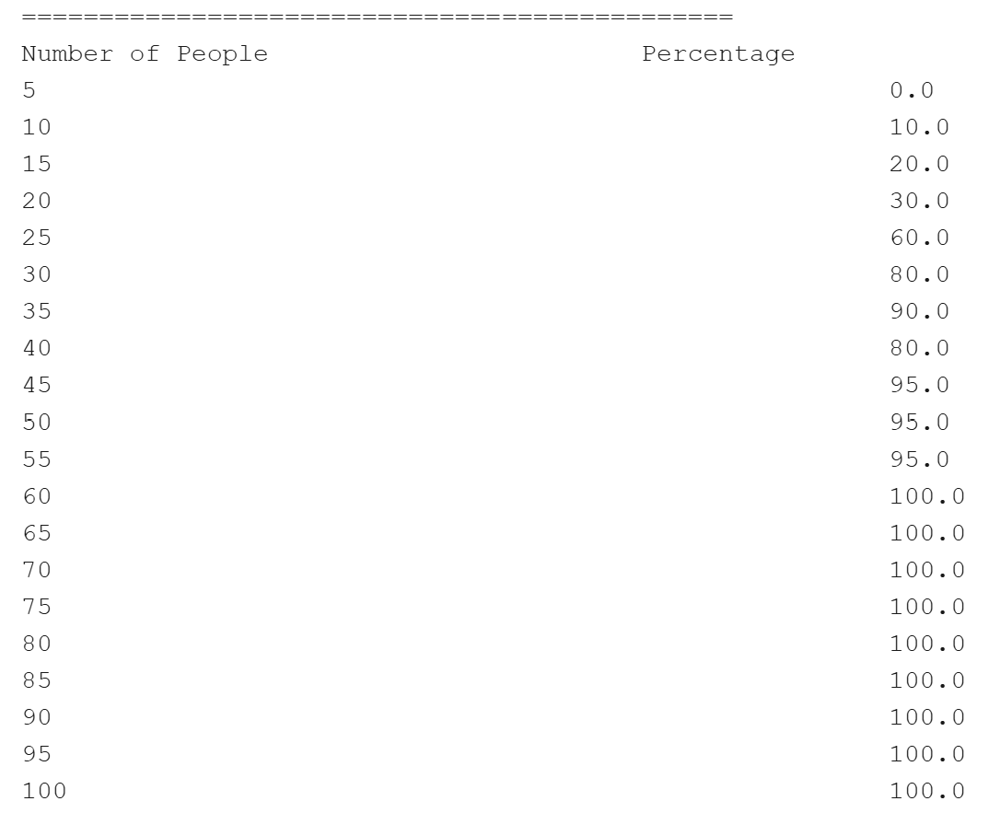

My name is Kinsey, and I am from Los Angeles, CA. I attend the University of San Diego and am currently working at their coffee house.
I am studying computer science with a concentration in cybersecurity and a minor in Spanish. I want to work in cybersecurity and have interned at both Southern California Edison and American Honda Motors. I am really interested in offensive cybersecurity like threat hunting, alert analysis and endpoint monitoring.
My hobbies include line dancing, traveling, reading, watching movies, crocheting, and bedazzling.

Overview: The birthday paradox is the idea that the probability of two people in the same room having the same birthday is more than half, provided that there is more than 23 people in the room. This project implements the birthday paradox by running simulations to calculate the probabilities.
Project Description: This project calculates the percentage of people in the same room with the same birthday. Based on the trial ran, it will generate a specific number of random birthdays and notes how many people in the hypothetical room have the same birthday. It then calculates this percentage and displays it to the user.
Implementation: I was responsible for coding the files Birthday.java, Trial.java, BirthdayTest.java and TrialTest.java. Using the enum Month in the file Month.java, Birthday.java randomly selects one of the months in the enum, then randomly selects a day of the month that is within the specified number of days assigned to the month in the enum. Trial.java builds on Birthday.java by instantiating an empty ArrayList and will add randomly generated birthdays to it based on the number specified. It also has the method hasDuplicateAfterIndex(int currentIndex) to check how many birthdays have a repeat after the index specified by the method that calls it, hasRepeatBirthday(). Lastly, the files BirthdayTest.java and TrialTest.java contain test cases using mocking to test the random birthday generator and make sure the methods in the Birthday.java and Trial.java files are working as intended.
What I Learned: This project was a great review of java for me since I hadn't coded in it for a couple of months. The new things I learned include clean code principles, how to use github to work with my partner, branching and merging, and writing test cases using Mockito and seeing test coverage using Jacoco.
krunquist@sandiego.edu & kinsey@ecrede.com